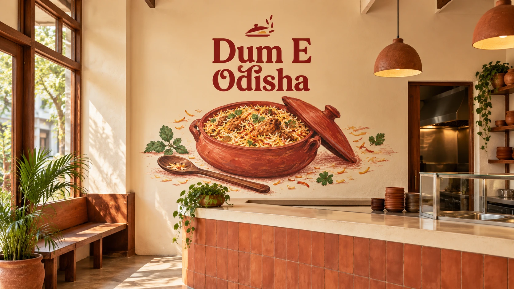
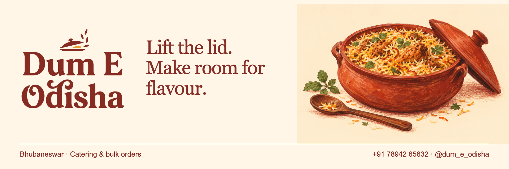
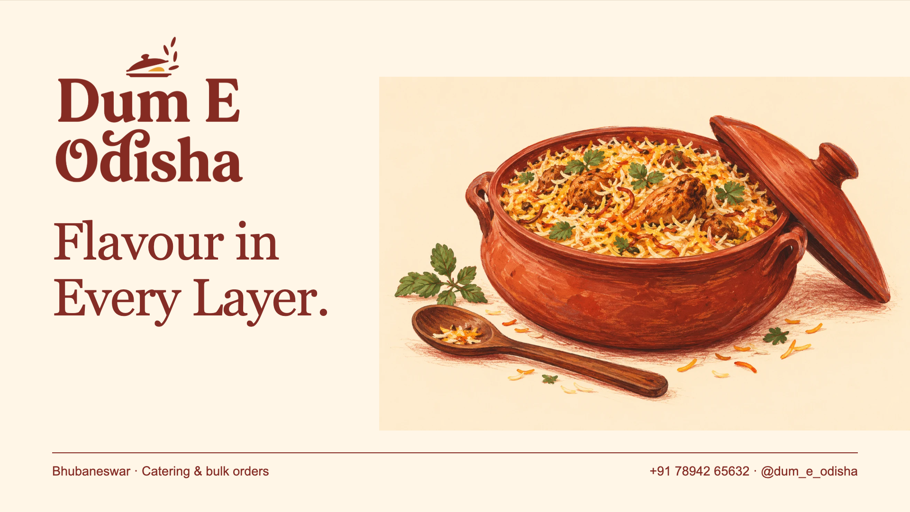
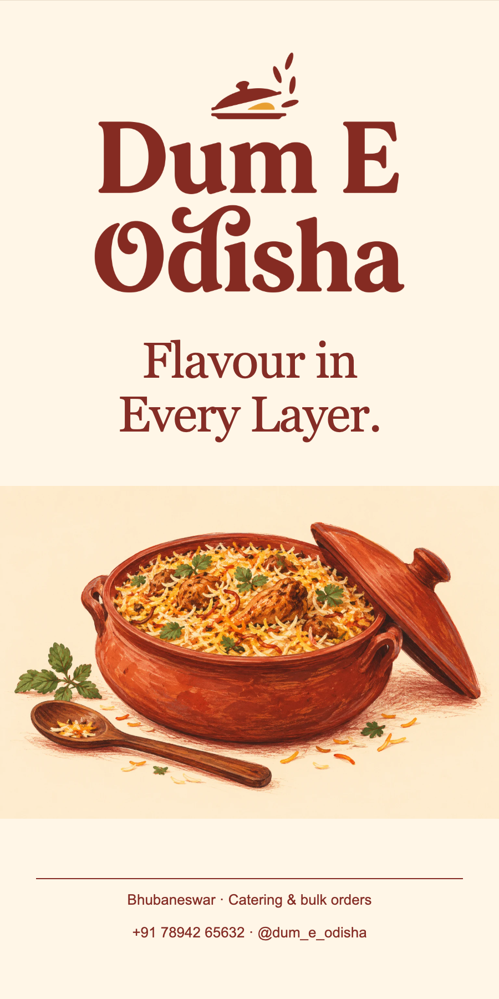

The current proposal, applied
The lifted lid
The current serif-and-lifted-lid proposal, expanded into an interior wall, a wide banner, a landscape TV display and a freestanding poster.
The idea behind
the lettering.
Keep the current name and symbol fixed, and extend the gouache illustration into larger spaces.
The wall image is a generated spatial concept. The display exports are exact digital compositions, not measured print or installation files.
01 / At architectural scale
A wall with character.

02 / A wide welcome
The horizontal banner.


03 / On screen & on the floor
One name.
A bigger presence.

The TV display
1920 × 1080 px / 16:9 brand holding slide. No invented menu or prices.


The tall standee
900 × 1800 px / layout concept; supplier dimensions and print proof required.

All artwork here is a proposal. New scripts and letterforms need owner selection, native-reader review where relevant, vector production and real-scale proofing before installation. The current brand assets remain unchanged.